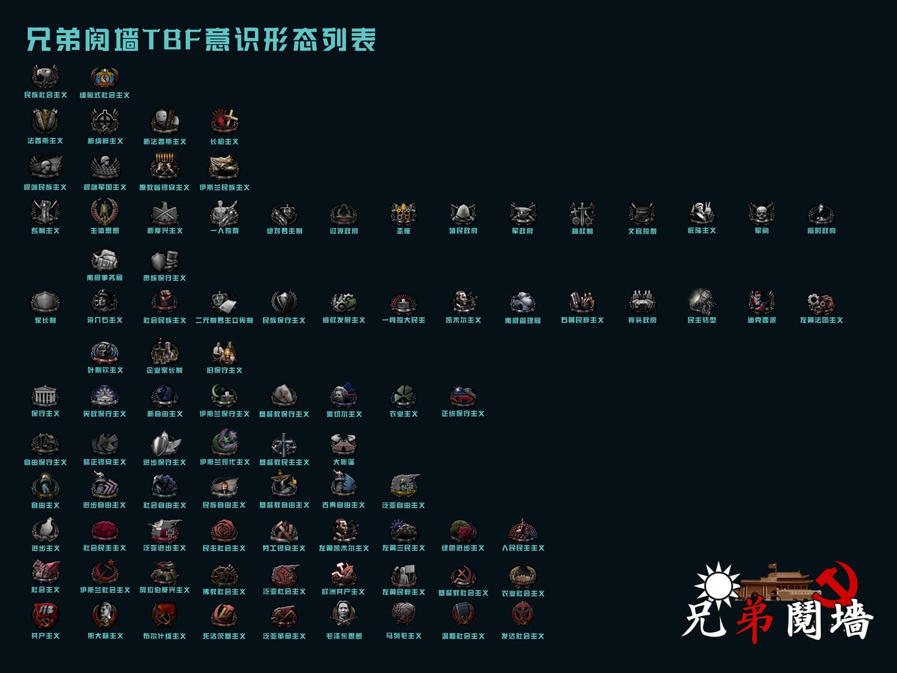

❂🇩🇪🇪🇺🌹𝐀𝐬𝐡𝐥𝐞𝐲 𝐁𝐥𝐨𝐜𝐤🍥🏳️⚧️🇹🇼❀
@bolckAshley
@YuRain_Is_Doll 那張光譜圖甚至還不如我做的這個🗿

❂🇩🇪🇪🇺🌹𝐀𝐬𝐡𝐥𝐞𝐲 𝐁𝐥𝐨𝐜𝐤🍥🏳️⚧️🇹🇼❀
@bolckAshley
#兄弟鬩牆 #設定集
兄弟鬩牆TBF中出現的所有意識型態列表！🥳
用了快兩週的時間整理出來的👏 https://t.co/nsaDfx5qz7
🏳️⚧️ꨄ︎可愛的阿宇摺耳貓🇺🇦🇵🇸🐋☭🌏
@YuRain_Is_Doll
@_vicwong 我想被共產主義奴役🥵
而且這馬蹄鐵解釋是經濟極右的海耶克在通往奴役之路提出的 一個自稱左派的人拿這套理論說事未免太幽默
還有這張圖有點過於傻逼了 有點史政常識都知道納粹明顯比法西斯更右 光從長刀之夜就可看出 甚至右到被其他法西斯唾棄的地步 尤其黨衛軍領袖希姆萊更能說是全世界最右端的人